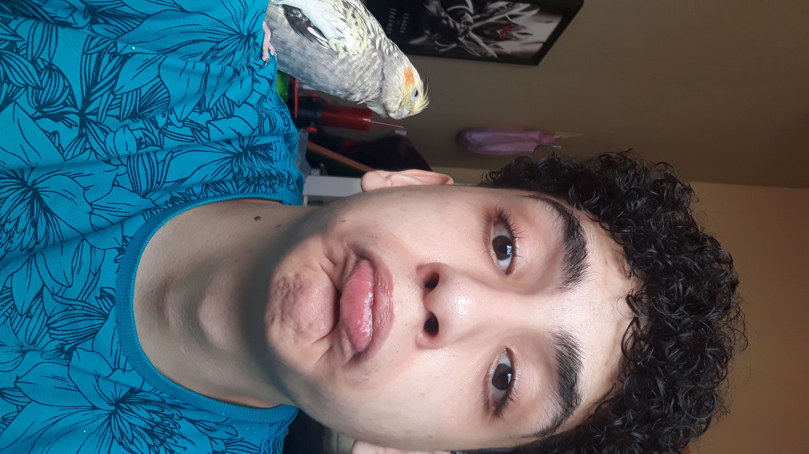

Quem somos nós

Olá eu sou Flávio cândido, estudante de TADS "Tecnólogo em análise e desenvolvimento de sistemas", tenho grande interesso na parte de desenvolvimento Web e de programas de softwares. Pretendo trabalhar na área de desenvolvimento de programas e interfaces.
Sou Guilherme, aluno de análise e desenvolvimento de sistemas, do segundo período, tenho interesse em desenvolvimento front-end e fullstack com uso das frameworks mais usadas atualmente (vue.js, angular.js), api's node.js e bancos de dados relacionais.